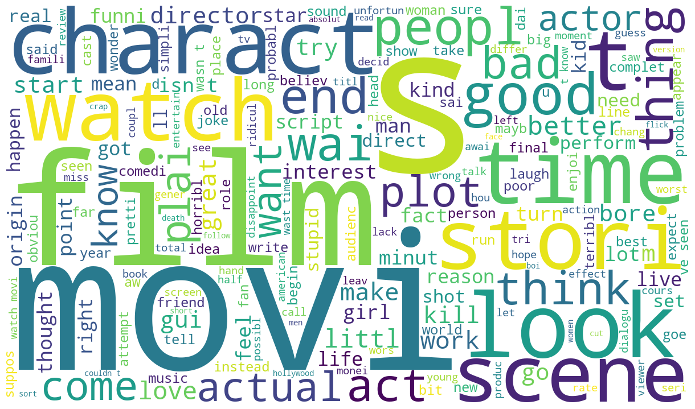
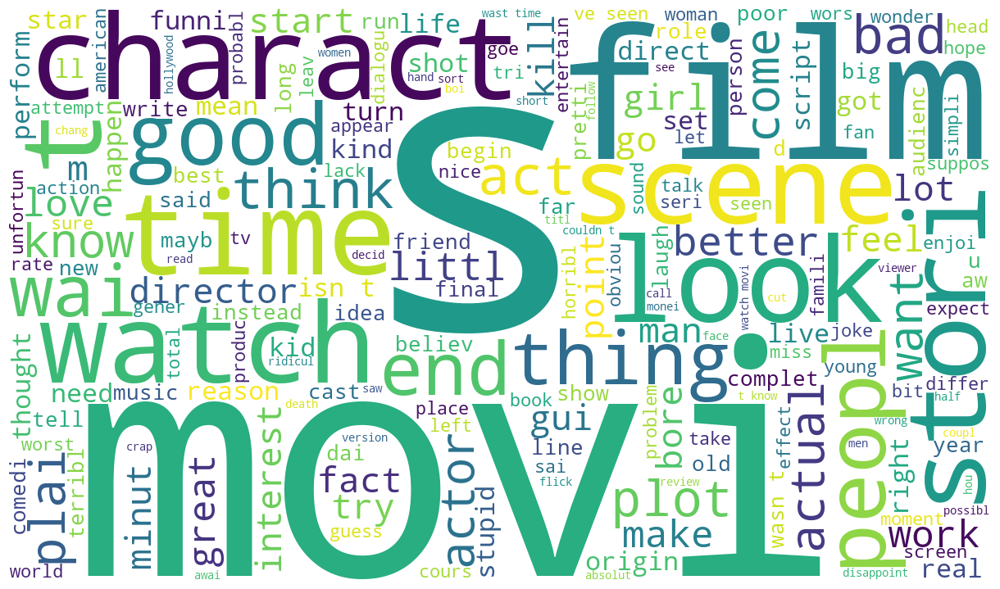

01 · Task
A first structured comparison of text-classification pipelines
The study treated 4,000 IMDb reviews as binary sentiment classification: ratings from 0–5 were labeled negative and ratings from 6–10 positive. Its purpose was to practice a complete experimental loop—preprocessing, representation, model selection, validation-based tuning, and held-out reporting.
This was a mentored study rather than fully independent research. It reused parts of a mentor-provided project structure and several code ideas, while applying them to a different dataset and experiment.
02 · Contribution
Implementing and adapting the experimental pipeline
- Prepared the IMDb data and implemented text cleaning for HTML tags, punctuation, repeated whitespace, numeric tokens, and stop words.
- Compared BOW and TF-IDF representations with Logistic Regression and Random Forest.
- Tuned model hyperparameters using validation results and reported the final comparison on the held-out test set.
- Added word-cloud and influential-word views; explored t-SNE but excluded it from the final findings because it did not produce useful separation.
03 · Protocol
Keeping representation fitting and model selection away from the test set
- 01Train · 70%
Fit preprocessing representations and train candidate pipelines.
- 02Validation · 15%
Select Logistic Regression and Random Forest hyperparameters.
- 03Test · 15%
Compare the four fixed model–vectorizer combinations once.
- 04Report
Record accuracy, AUROC, AUPRC, and F1 for each pipeline.
04 · Results
Logistic Regression with TF-IDF led across the recorded metrics
| Pipeline | Accuracy | AUROC | AUPRC | F1 |
|---|---|---|---|---|
| Random Forest + BOW | 79.1% | 0.875 | 0.872 | 0.798 |
| Logistic Regression + BOW | 87.3% | 0.943 | 0.941 | 0.879 |
| Random Forest + TF-IDF | 82.9% | 0.908 | 0.908 | 0.833 |
| Logistic Regression + TF-IDF | 89.3% | 0.957 | 0.957 | 0.895 |
Within this limited comparison, linear Logistic Regression benefited more from TF-IDF than the Random Forest pipeline. The result identifies the best of four tested combinations; it does not establish state-of-the-art performance or generalize beyond this dataset and split.
05 · Supporting evidence
Inspecting vocabulary signals without turning them into causal explanations


These views helped inspect frequent vocabulary and influential terms, but they are descriptive artifacts rather than evidence that individual words caused a prediction.
06 · Limitations
Useful experimental practice, with a narrow comparison boundary
- The study compared two classical model families and did not evaluate neural models.
- No confusion matrix or systematic error analysis was completed.
- The 4,000-review dataset and single split limit confidence in small metric differences.
- No strong trivial baseline or uncertainty estimate was included.
- t-SNE was explored but did not yield a meaningful class separation, so it is not presented as a successful result.